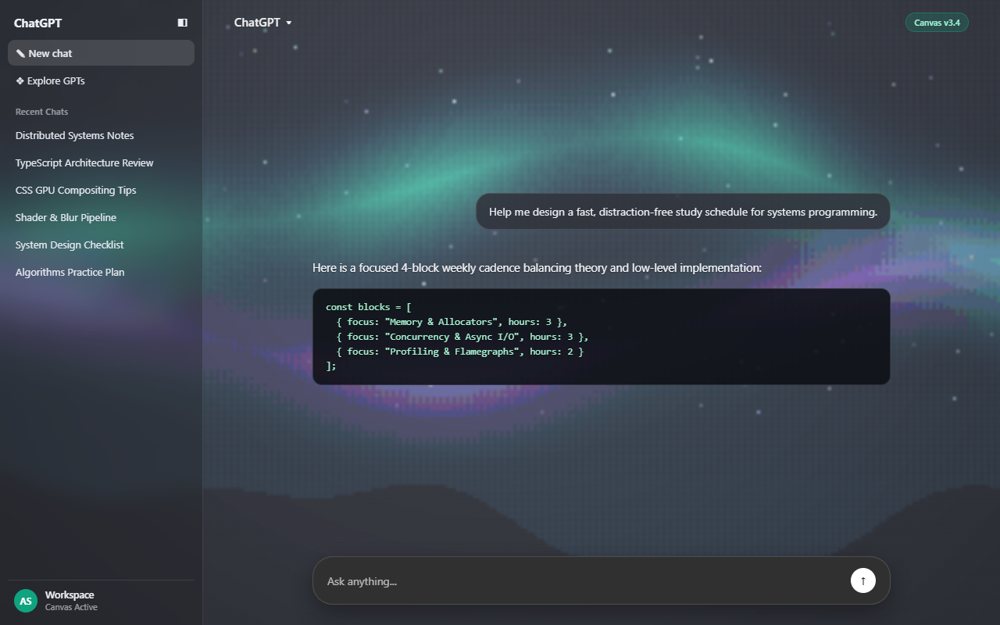
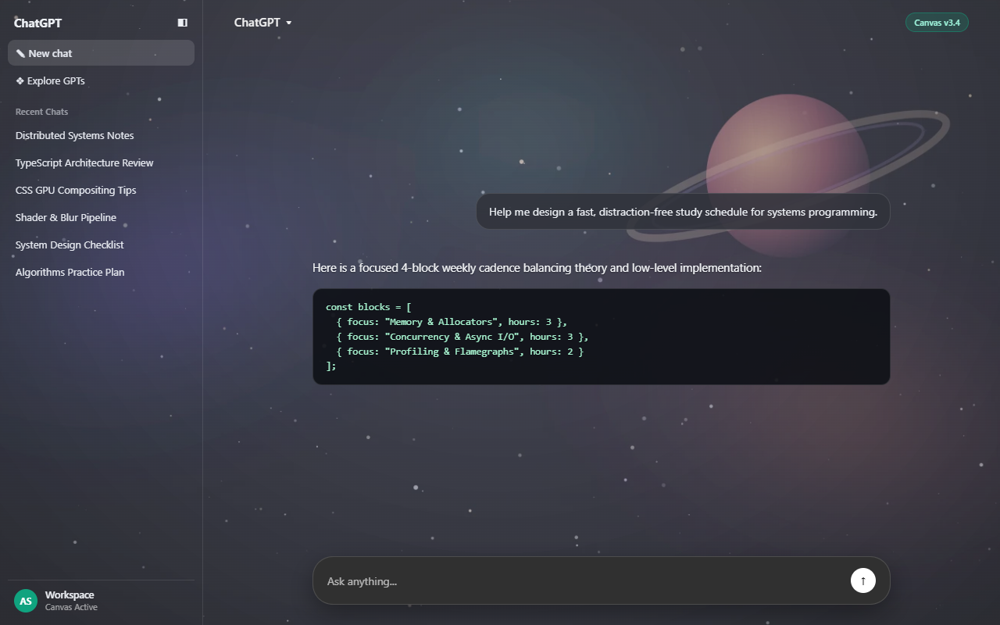
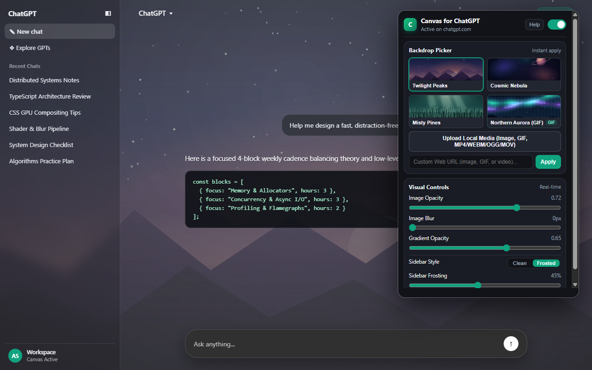

Designed for Speed & Focus
Zero-Lag Pure-CSS Engine
Eliminates layout thrashing and DOM scans during AI token streaming and typing so responses stay instantaneous.
Clean or Frosted Sidebars
Switch between a completely transparent Clean (0%) sidebar or adjust Sidebar Frosting (1%–100%) in real time.
Offline Presets & Local Media
Includes 4 instant bundled presets plus local file upload for images, animated GIFs, and looping MP4, WEBM, OGG, and MOV videos.
100% Private & Client-Side
Zero telemetry, zero analytics, and zero external API calls. Everything stays in your browser's local storage.
Screenshots



Quick Installation
Chrome, Brave, Edge, Opera, Vivaldi & Arc
- Download and extract
canvas-for-chatgpt-v3.4.zip. - Open
chrome://extensions(orbrave://extensions,edge://extensions). - Enable Developer mode, click Load unpacked, and select the extracted folder.
Mozilla Firefox
- Download
canvas-for-chatgpt-v3.4-firefox.zip. - Open
about:debugging#/runtime/this-firefox(for temporary loading) or install once signed via AMO. - Click Load Temporary Add-on… and select the ZIP or extracted
manifest.json.